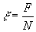
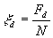

The Magnetic Puck
July 2000
2.5 hours
In this experiment you ARE expected to indicate uncertainties in your measurements, results and graphs
Aim
To investigate the forces on a puck when it slides down the slope.
Warning
Do not touch the circular flat faces of the puck or the paper surface of the slope with your hands. Use the glove provided. The faces have different coloured paper stickers for convenience but the frictional characteristics of the paper faces may be assumed to be the same.
Timing
The sensors underneath the track trigger electronic gates in the box and the green LED will light when the puck is between the sensors. The multimeter measures the potential difference across a capacitor, which is connected to a constant-current source (whose current is proportional to the voltage of the battery) whilst the green light is on. The reading of the multimeter is therefore a measure of the time during which the puck is between the sensors. This reading can give a value for the speed of the puck in arbitrary units.
Operating the timer
i) Press and hold down the black push button on the side of the box. This switches the electronics on.
ii) If the green light goes on slide the puck (light face up) past the lower sensor. The green light should go off.
iii) The potential difference across the capacitor can be reduced to zero before the puck is released by pressing the red button for at least 10s.
iv) The battery potential difference can be measured by connecting the multimeter across the terminals marked with the cell symbol.
Definitions
(i) A moving body sliding down an inclined plane experiences a tangential retarding force F and a normal reaction N. Define

(ii) When the retarding force is due to friction alone, x equals ms and is called the dynamic coefficient of friction for the surface. It is independent of speed.
(iii) When the blue (dark) side is in contact with the plane define

where the tangential force Fd is partly due to the surface friction and partly due to magnetic effects.
(iv) The variable xds which gives the magnetic effects only is defined by
Important hints and advice
(i) You will find it helpful initially to investigate the behaviour of the puck qualitatively.
(ii) Think about the physics before you do a quantitative investigation. Remember to use graphical presentation where possible.
(iii) Do not attempt to take too many experimental readings unless you have plenty of time.
(iv) You are measuring the potential difference across an electrolytic capacitor. This does not behave quite like a simple air capacitor. Slow leakage of charge is normal and the potential difference will not remain completely steady.
(v) You are given one puck and one 9.0 V battery. Conserve the battery! The constant current filling the capacitor is proportional to the battery potential difference. It is therefore advisable to monitor the battery potential difference. In addition, the sensors may not be reliable if the potential difference of the battery falls below 8.4 V. If this happens, ask for another battery.
(vi) Your answer pack contains 4 sides of graph paper only. You will not be given further sheets. You may keep the puck at the end of your experiment.
(vii) If you have trouble operating the multimeters ask an invigilator.
Data
· Weight of puck = 5.84´10-2 N
· The voltmeter reading indicates the time of travel of the puck. When the potential difference of the battery is 9.0 V then 1V corresponds to 0.213 s
· Distance between sensors = 0.294 m
Experiment
Using only the apparatus provided investigate how xds depends on the speed vq of the puck for track inclinations q to the horizontal.
State on the answer sheet the algebraic equations/relations used in analysing your results and in plotting your graphs.
Suggest a quantitative model to explain your results. Use the data which you collect to justify your model.